The app at a glance
This is JigRipper part-way through a session, listening and naming tunes as they are played. The numbers mark the parts you will use most.
- The search bar. Type a tune name here at any time. Your saved sessions, tunes and sets live behind the buttons to its right.
- The sheet music. When a tune is named, its music appears here on its own.
- The status line. What JigRipper is doing this second — listening, identifying, or settled on a tune.
- The listen ring. Tap it to start and stop listening. This is the control everything else follows from.
- The live edge of the river. The river is the strip of dots along the bottom, where each tune you play is written down as you play it. Newly identified tunes appear at its right-hand edge.
- Earlier tunes lie to the left. As the session goes on, the river carries what you played away to the left. Scroll left to go back through the evening.
Getting started
Find the ring near the bottom of the screen, beside the word listen. Tap it, and JigRipper starts listening through your microphone.
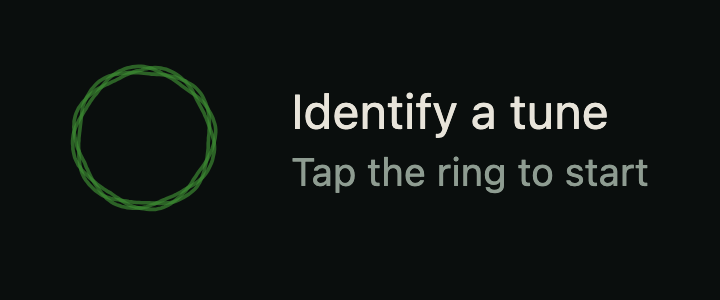
Play your tune. You do not have to start at the beginning, and you do not have to play it perfectly.
The buttons above the river
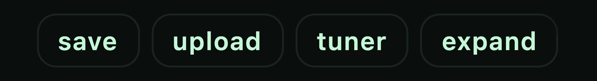
- save
- Keeps this session so you can come back to it.
- upload
- Hands JigRipper a recording instead of the microphone.
- tuner
- A tuning dial, for while you are listening.
- expand
- Makes the river taller. It then reads compact to put it back.
What the status line says
- listening
- It can hear you, but has not settled on a tune yet.
- identifying
- It has a candidate in mind and is gathering more evidence.
- locked
- It has settled. The name appears beneath, with the tune type, time signature, tempo, key, and the instruments it thinks it can hear.
- keep playing…
- It heard music but could not match it. Play on — it keeps trying.
- noise
- It hears sound, but not music. A fan, a room, a conversation.
- silence
- Nothing loud enough to work with.
The tune river
The river is the record of your session. Every tune you play becomes a band in it, laid out left to right in the order you played them.
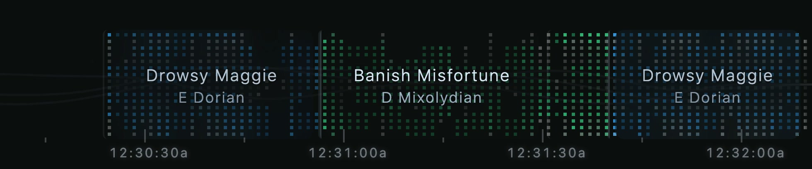
Scrolling back through it
- On a phone or tablet: drag the river sideways with your finger.
- On a computer: use the mouse wheel over the river. An ordinary up-and-down wheel moves it sideways. Clicking and dragging does not scroll it.
While you are listening, the river follows along on its own. Scrolling back stops that, so you can look at something without it sliding away. To return to the present, press the ▶ button at the right-hand edge, scroll all the way back to the right, tap an empty part of the river — or just wait. It returns by itself after fifteen seconds.
Reading the bands
- A band is one tune played in one key. Playing the same tune twice in a row, with less than about four seconds between, shows as a single band.
- A short band will not have room for its label. A tune needs around ten seconds of playing before its name will fit.
- The faint colours only separate one tune from the next. They do not mean anything about the music, and they are reused as the session goes on.
- If you change key, the band splits in two and the second half shows the new key underneath the name. The name stays the same, and there is no dividing line — the changed key is the signal.
Tapping a band
Tap any band to open that tune's sheet music, in the key you played it in. The sheet then holds on that tune instead of following what JigRipper hears; tap the same band again to let go of it.
Sheet music
Sheet music appears on its own when a tune is identified, and whenever you tap a band in the river or pick a tune from search. The ▢ full screen button fills the screen with it.
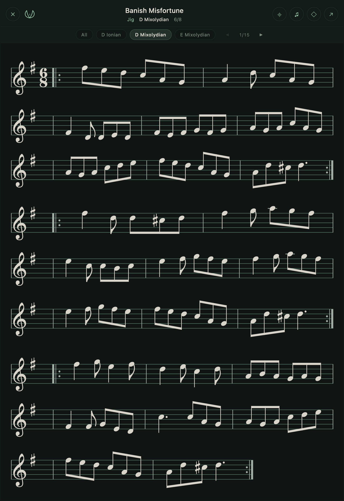
Keys and settings
Most tunes have been written down many times, in slightly different versions. Each one is a setting. 1/11 means you are looking at the first of eleven, and the arrows either side step through them.
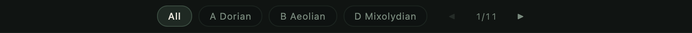
The buttons to the left filter by key. All shows every setting; picking a key narrows the list to settings written in it.
Dark or paper
The music is drawn light-on-dark to match the rest of the app. If you find black notes on a pale page easier to read — in daylight, or just by habit — switch to Paper: settings, Sheet music, Page. Only the notation changes; the title, the key buttons and the rest of the app stay dark. The choice applies to the small sheet and full screen alike, and is remembered.
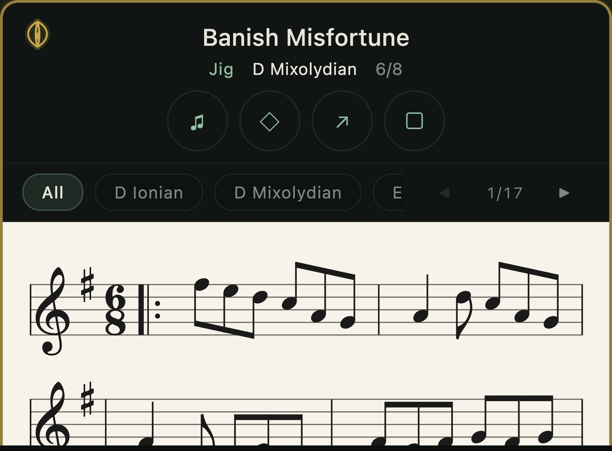
The buttons
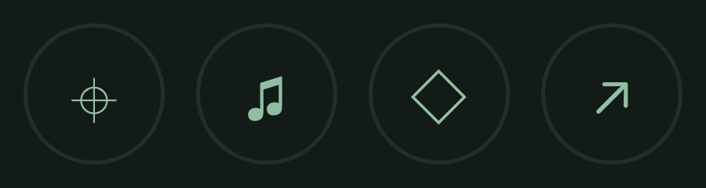
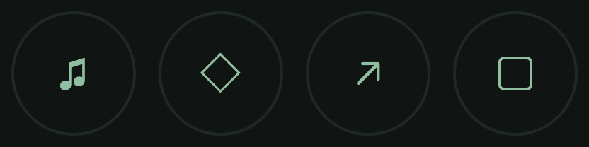
- Follow along
- Highlights the bar you are playing and moves through the music with you. It only appears when the sheet on screen is the tune JigRipper is actually listening to — if you are holding a different tune open, it has nothing to follow.
- Show chords
- Adds suggested chords above the staff. Only offered for tunes that do not already have them.
- Save this tune
- Keeps the tune in your collection. The diamond fills in — ◆ — once saved. Tap it again to remove it.
- Show the ABC
-
The tune's notation as ABC text — the setting on screen, as a complete tune
you can paste into any ABC program. copy ABC copies it;
you can also select just part of it.
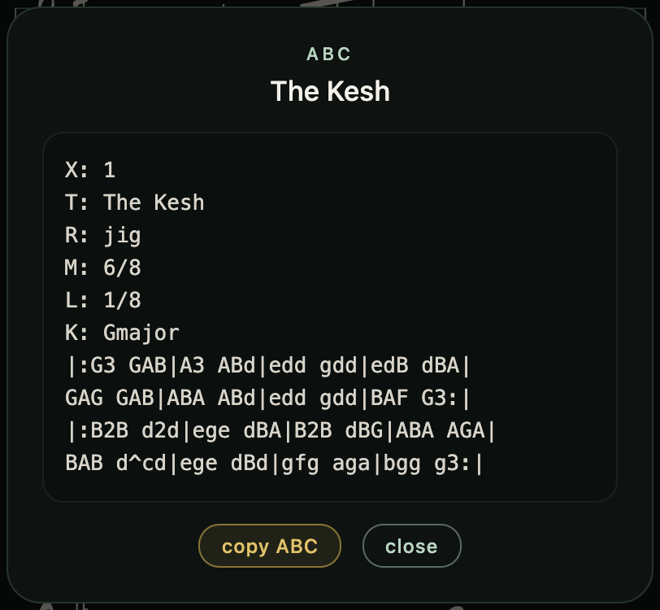
The ABC for The Kesh. - Open on thesession.org
- Opens the tune's page on thesession.org, where the music came from. To have it open by itself for each new tune, see thesession.org: auto-open.
- Full screen
- A small outlined square, in the smaller sheet only. In full screen its place is taken by ×, which closes.
Holding a tune still
The clasp at the top left of the sheet says whether the music will change under you. Green, with the leaves open, means it is live: when JigRipper hears a new tune, the sheet changes to match. Gold, with the leaves closed, means it is held, and the music stays where it is no matter what it hears. Tap the clasp to switch.
Gestures on the music itself
These work on a touch screen, in both the small sheet and full screen.
- Long press
- Holds the tune still, or lets it go again. The same thing the clasp does.
- Tap the left or right edge
- Steps to the previous or next setting. The middle of the sheet does nothing on purpose, so you can tap it without the music moving.
- Double tap
- Full screen, and back again.
- Swipe left or right
- Also steps through the settings.
On a computer, use the buttons and arrows instead. The ← and → keys step through settings too, as long as you are not typing in the search box.
Searching for a tune
The search box sits across the top of the screen. Type at least two letters of a tune's name and matches appear underneath.
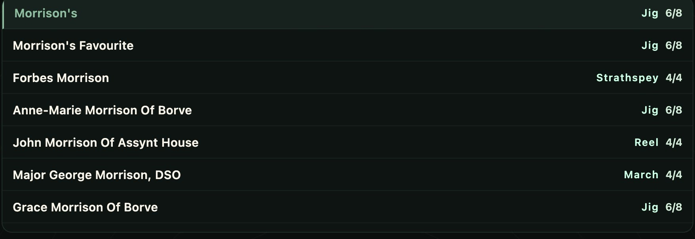
Tap a result to open its sheet music. Search matches tune names only — not alternative names, not types, not keys.
On a computer
- Just start typing anywhere on the page — the letters go into the search box.
- Down and Up arrows move through the results.
- Enter opens the highlighted one.
- Escape clears the box and closes the list.
Tapping the empty search box brings back the last few tunes you looked at, under the heading RECENT.
Sessions, tunes and sets
Three collections sit at the right-hand end of the search bar: sessions, tunes and sets. On a narrow screen they fold into a single button reading library ▾.
Sessions
The entire contents of the river can be saved by pressing save above the river. Sessions are named after the date and time. The button will briefly read saved ✓ to indicate success.
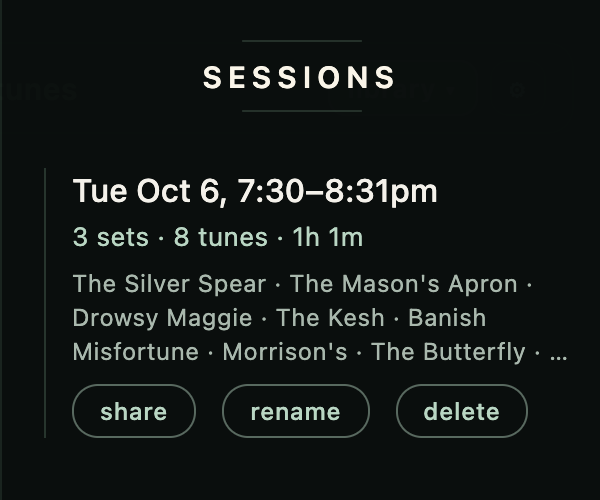
Open the sessions list and tap one to load it back into the river, where you can scroll through it and tap tunes exactly as you did on the night. Its Current session list opens beside it.
The session you have open is marked with a gold line.
- share
- Hands the session to whatever you normally share with — messages, mail, notes, or Copy. On a desktop browser that cannot share, it copies to the clipboard instead, and reads copied ✓.
- rename
- Type the new name, then press save (or Done, or tap anywhere else). Pressing and holding the session does the same.
- delete
- Press it, then press tap again to delete — the second press deletes the session. Leave it a few seconds and it goes back to delete.
Sharing gives you something like this, ready to paste anywhere:
- when the session ran — its first tune to its last — then how many sets and tunes, and how long;
- the tunes grouped into sets — runs played back to back — with when each set started and ended;
- a thesession.org link under every tune.
The shared text is a summary, not a transcript. Tunes you played for less than about twenty seconds are left out, and a tune repeated immediately is listed once. So the shared list can be shorter than what you see in the river.
Shared text follows your edits: fix a tune or regroup the sets (Editing sessions and sets) and the next share says so.
JigRipper keeps up to fifty sessions and will not throw away an old one to make room for a new one; if you reach the limit it says so, and you delete one yourself.
Tunes — your saved collection
The tunes list holds everything you have saved with the ◇ button on a sheet. That button is the only way in.
Tap a tune in the list to open its music. Sort the list by recent, name, type or key. The × removes a tune, as does tapping the filled ◆ on its sheet.
Sets
A set is a few tunes you play back to back. Keep the ones you play often here, build new ones, and select one before you play it — JigRipper then keeps its music to hand and uses it to recognise each next tune sooner. How to do each is under Editing sessions and sets.
- + New set
- Starts an empty set. Use + Add tune to search for tunes, or pick from your saved ones.
- From river
- Builds a set out of what you just played. The panel closes and a small bar appears reading BUILDING SET. Tap tunes in the river to add them, in order, then press save set.
Editing sessions and sets
JigRipper gets most tunes right, but a room is a noisy place and now and then it names one wrongly, or splits a set where you didn't stop. You can put that right — while you are still playing, or afterwards on a saved session — and you can keep the sets you like and play from them.
The current session
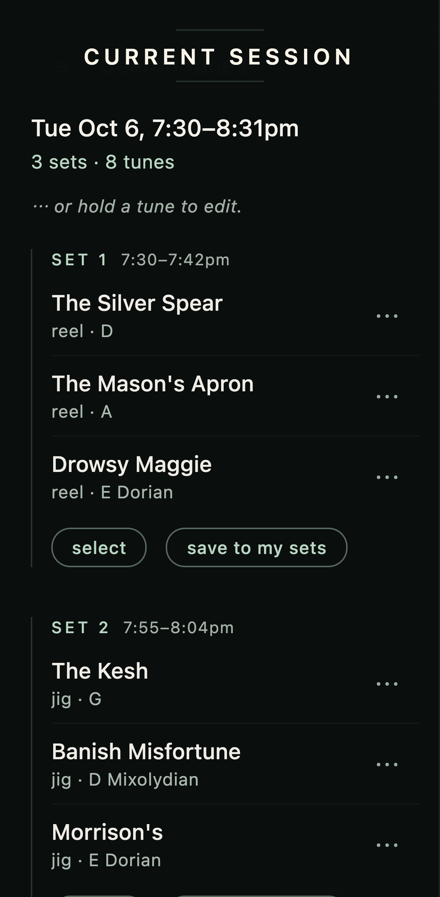
Press ☰ at the left end of the search bar — it reads ☰ session where there is room. A panel slides in listing everything in the river, grouped into sets just as the shared text groups them. It shows the session you are listening to, or the saved session you have opened; loading a session opens it for you.
Each set shows when it started and ended.
- Tap a tune to close the panel and scroll the river to where it starts. When you are not listening, its music opens too, and its name turns gold in the list.
- Tap ⋯ beside a tune, or press and hold it, to edit it.
Fixing a tune it got wrong
-
Tap ⋯ beside the wrong tune in the current session — or press and hold its name in the river itself (right-click it on a computer).
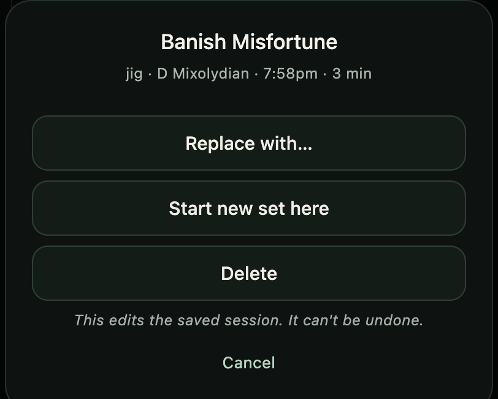
The card names the tune, its key, when it started and how long it ran. -
To name the right tune, press Replace with…, type a few letters of its name, and tap it. The tune keeps its place and the key it was played in.
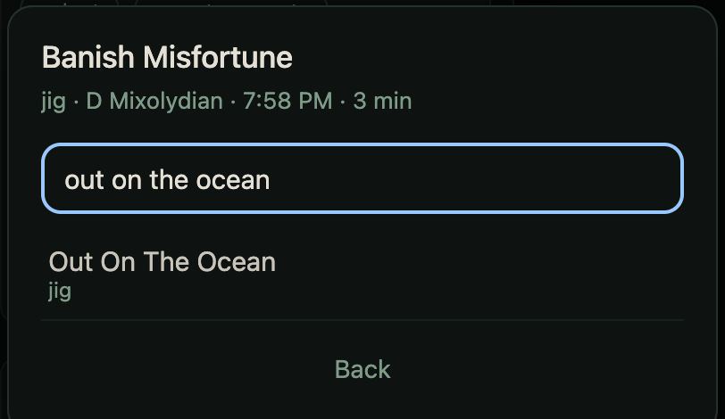
Search works the way the main search does — "the kesh" finds The Kesh. -
To remove a tune that was never played — someone noodling, a fiddle being tuned — press Delete, then press it again: it asks twice so a stray tap cannot remove anything.
Moving where a set starts or ends
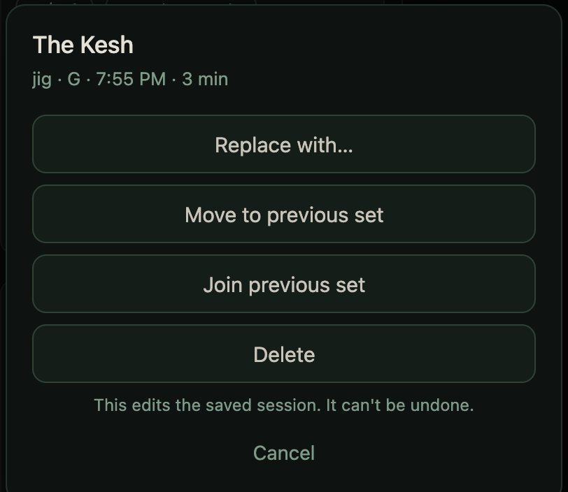
JigRipper starts a new set wherever the music stopped for a while. When that guess is wrong, open the tune's ⋯ menu. It offers only the moves that make sense for where the tune sits:
- Move to previous set
- The first tune of a set joins the set before it; the rest stay a set of their own.
- Join previous set
- The whole set joins the one before it.
- Move to next set
- The last tune of a set becomes the first of the next.
- Start new set here
- Splits the set so a new one begins with this tune.
Tunes always stay in the order they were played — these moves only change where one set ends and the next begins.
Keeping a set
Under each set's tunes are two buttons. save to my sets copies it into your sets, named after its tunes; the button then gives way to ✓ in my sets. select plays from it — see Playing from a set; while it is selected, the button reads selected ✓ and the set's line turns gold.
Your sets
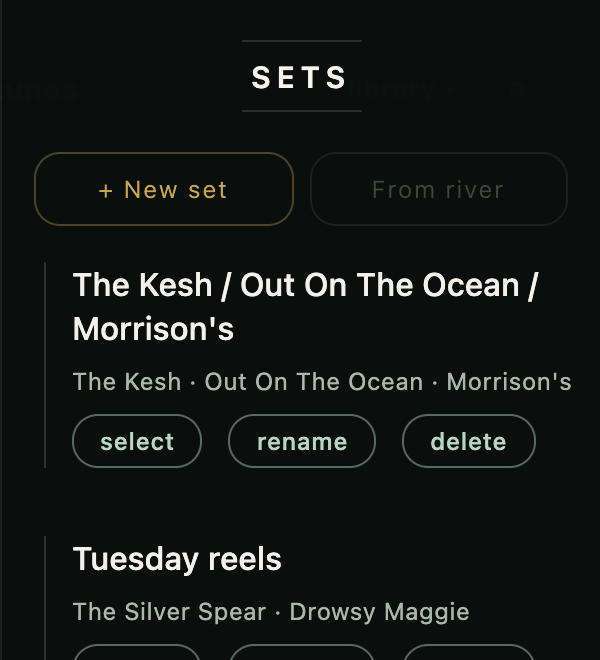
- select
- Plays from this set — see Playing from a set. It reads selected ✓, and the set's line turns gold, while it is.
- rename
- Type the new name, then press save (or Done, or tap anywhere else).
- delete
- Press it, then press tap again to delete — the second press deletes the set.
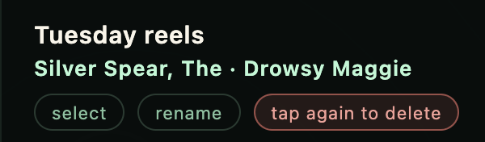
Inside a set
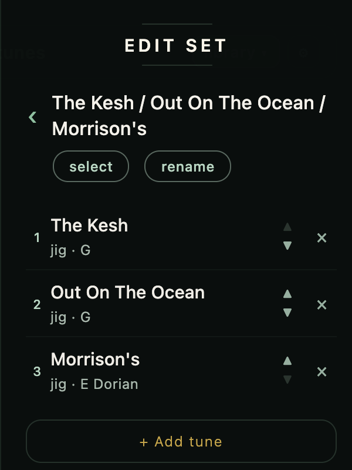
- ▲ and ▼ move a tune up or down the set; × takes it out.
- + Add tune searches for one, or picks from your saved tunes.
- Tap a tune to see its music — that selects the set as well, so the rest of it stays to hand.
- ‹ goes back to the list.
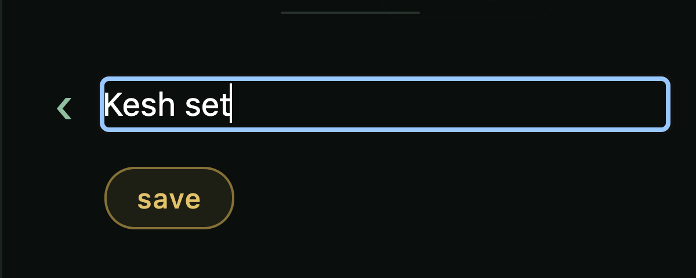
Playing from a set
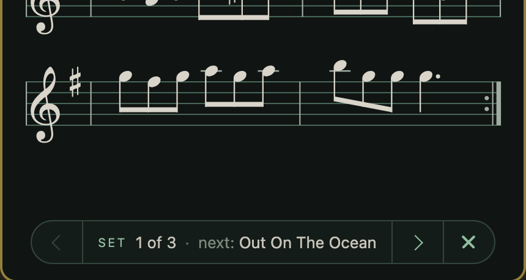
Select a set before you play it and a bar at the end of the music — where you are as a tune finishes — shows where you are in the set and what comes next; on the set's last tune, what came before. On a wide screen it shows both. In full screen it sits at the foot of the screen.
- ‹ and › step back and forward through the set, opening the new tune at its first line.
- × puts the set away. The music on screen stays where it is.
A selected set is also put away when the app is closed.
While JigRipper is listening, the set helps it:
- The music still follows what you play, and the heading shows where you are in the set.
- When you are on a tune in the set, the next one reads up next. JigRipper expects it, and recognises it sooner.
- When it becomes unsure of the tune you are on, it shows the next tune's music — the likeliest thing to be coming — until it is sure what you are playing.
- A tune that is not in the set has to play for a while before it takes over from one that is, so a moment of confusion does not pull you out of the set.
- Stepping to another tune in the set shows its music for a look ahead; when the next tune starts, the music goes back to following you.
It never names a tune you are not playing: the set makes JigRipper quicker to hear the tunes in it, and nothing more.
Under a tune's music, In your sets lists the sets you have saved that include it, and where it comes in each. Tap one to select that set; tap it again to put it away.
Analyzing an audio file
The upload button hands JigRipper an audio file instead of the microphone — a recording of a session, a track from an album, a voice memo. It accepts the usual formats (MP3, M4A, WAV, FLAC and others) up to twenty minutes long.
It takes longer than live listening, and shows its progress. When it finishes you get Deep listen complete and a list of the strongest candidates grouped by tune type, each one a link to thesession.org so you can check it against the real thing. View river puts the results into the river.
Starting an upload stops live listening first.
On your watch
JigRipper has a companion app for Apple Watch and another for Wear OS watches — the Android ones, made by Samsung, Google, Fossil and others. Both show the tune your phone is hearing, and both start and stop listening from your wrist. They are not the same app, and they do not do quite the same things — a watch is only allowed to reach so far into its phone, and the two platforms draw that line in different places.
Neither watch listens. The phone does all the hearing and all the identifying. The watch is a window onto it and a remote control; nothing is recorded on your wrist.
What follows is the same for both, then a section for Apple Watch and a section for Wear OS. You only need your own.
What you see on the wrist
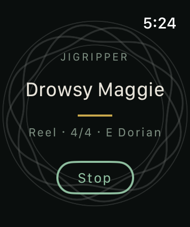
Both watch apps are laid out the same way, top to bottom:
- JIGRIPPER. The wordmark. Always there.
- The tune. Its name, then a short coloured bar, then its type, time signature and key — Reel · 4/4 · E Dorian. Before the phone settles on anything you get Listening…, Background noise or Silence in the name's place.
- The bar's colour carries the same meaning as the status line on the phone: gold once it has locked onto a tune, silver-green while it is still listening, weathered grey on noise or silence.
- One button. Listen, filled gold, when the phone is not listening. Stop, outlined silver-green, while it is. Cancel for the few seconds a start is still on its way to the phone.
- The woven ring behind everything is the phone's listen ring, dimmed. It runs loose while listening and settles outward when a tune locks.
When your wrist drops, both watches dim: the tune name stays readable in grey, the coloured bar and the button go, and the ring stops moving. Raise your wrist and the colour comes straight back. A Wear OS watch will hold the app there for as long as you leave it; an Apple Watch goes back to its watch face on its own after a couple of minutes, which is why it has a card in the Smart Stack.
Starting and stopping
Tap Listen. The watch shows Starting… while the phone wakes up and gets itself ready — the first start after the app has been closed can take several seconds, and the watch may say Loading models… while it waits. Once the phone is really listening, the wrist changes to Listening… and then to the tune. If the phone never answers at all, the watch gives up and goes back to Listen after about half a minute.
Stop always reaches the phone, as long as the app is still running — and it is, if it is listening.
Whether you can start a session while the phone is locked in your pocket is the sharpest difference between the two platforms, and it is covered in each section below.
Apple Watch
Apple Watches run watchOS. The Smart Stack card needs watchOS 11 or later; everything else here works on older versions too.
Setting it up
The watch app travels inside the iPhone app. There is nothing separate to download.
- Pair the watch with your iPhone in the usual way, if you have not already.
- Install or update JigRipper on the iPhone. The watch app comes with it.
- Look for JigRipper on the watch. If it is not there, open the Watch app on the iPhone: either turn on Automatic App Install under General, or scroll down to Available Apps and install JigRipper by hand.
- Open it once on the watch and once on the phone, so the two introduce themselves to each other.
An iPad cannot pair with an Apple Watch, so none of this applies to an iPad — everything else in the app works there as normal.
The card in the Smart Stack
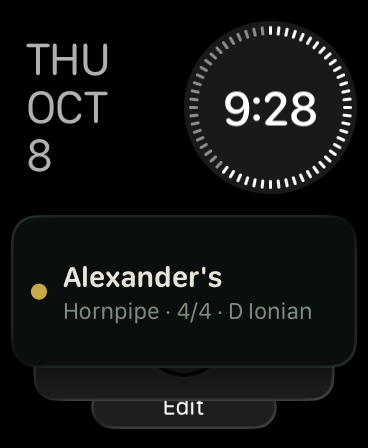
An Apple Watch will not keep an app on screen: watchOS goes back to the watch face after a couple of minutes, whatever you would rather it did. So the thing to glance at during a session is not the app but the card.
While the phone is listening it puts a card on its own lock screen, and on watchOS 11 or later that card also appears in the watch's Smart Stack — turn the Digital Crown upwards from the watch face. It shows a coloured dot, the tune, and its type and key. It arrives on its own when a session starts and goes when you stop. There is nothing to set up.
If a session ends without the phone getting the chance to say so — it was shut down, or the phone closed it to free up memory — the card changes to Session ended rather than sitting on the last tune it knew about.
When the iPhone is locked
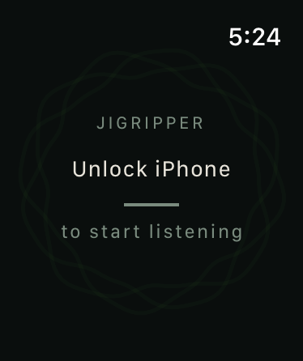
A buzz when it finds a tune
Your wrist is tapped each time JigRipper locks onto a different tune, which is what makes a session in your pocket worth wearing. To turn it off, go to settings, Apple Watch, Vibrate on a new tune. The watch and the lock-screen card carry on updating either way — only the buzz stops.
Wear OS
Wear OS is Google's watch system, used by Samsung Galaxy Watches, Google Pixel Watches and others. It was called Android Wear years ago; you may still see that name written down.
Setting it up
Here the watch app is a genuinely separate download. Installing JigRipper on the phone does not put it on the watch.
- Pair the watch with your phone in the usual way, if you have not already.
- Install JigRipper on the phone.
- On the watch itself, open the Play Store, find JigRipper, and install it there too.
- Open it once on the watch and once on the phone.
Adding the tile
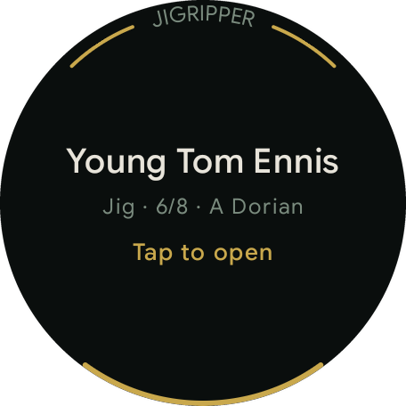
A Wear OS watch has a row of tiles beside the watch face, and JigRipper offers one. It is a glance, not a control: it shows the tune the phone is hearing, and tapping it opens the watch app, where the button that starts and stops listening lives. Tapping the tile does not start or stop listening itself.
- From the watch face, swipe sideways until you reach the row of tiles.
- Press and hold any tile until they shrink down.
- Swipe along to the + at the end of the row and tap it.
- Find JigRipper in the list and tap it.
- Swipe back, or press the crown. The tile now sits in the row for good.
The exact wording varies between watches, and some let you arrange tiles from the watch's own app on your phone instead. Either way the tile stays current while the watch app is closed — the phone keeps it up to date in the background. It is a snapshot the watch refreshes on its own schedule, though, so it can run a few seconds behind. Open the app for the live view.
Starting with the phone locked
This works with the phone locked in your pocket. The phone lights up, shows JigRipper over its lock screen, and starts listening. You do not have to unlock it or touch it. This is the one thing a Wear OS watch can do that an Apple Watch cannot.
No buzz
A Wear OS watch never buzzes when a new tune is found, so there is nothing there to turn off. Raise your wrist, or glance at the tile.
When the wrist and the phone disagree
- The watch is showing a tune you have finished with. Tap Stop on the watch. That returns the wrist to the Listen button whatever the phone believes.
- A Wear OS tile is a little behind. Expected — see Adding the tile above. Open the watch app for the live view.
- Nothing at all on the watch. The two halves have to be installed as a pair, and the watch has to be paired and in range. Open JigRipper on the phone, then on the watch, and try again.
Settings worth knowing
Open settings with the gear button at the end of the search bar — it reads ⚙︎ settings when there is room, and just ⚙︎ on a narrow screen. Most of what is in there is best left alone; these are the ones worth a look.
- High-contrast mode
- Brighter, bolder and larger text throughout the app. Under Display.
- Staff
- Treble, bass, alto or tenor clef for all the sheet music. The non-treble clefs shift the octave so the notes stay on the staff. Under Sheet music.
- Page
- Dark or Paper for the sheet music — light notes on the app's dark background, or black notes on a pale page. Under Sheet music; see Dark or paper.
- thesession.org: auto-open
- Off by default. Automatically opens a tab showing the current tune on thesession.org each time JigRipper locks onto a new one — the ↗ button, pressed for you. In a browser, allow pop-ups for jigripper.com when it asks. In the app, it opens only while JigRipper is on screen. Under Sheet music.
- Microphone
- Which microphone to listen through, if you have more than one — a clip-on mic or a USB interface will hear far better than a phone across the room. Under Input; see Choosing a microphone.
- Temperament
- For the tuner. Equal temperament by default; just intonation reads zero cents on pure intervals above a root you choose. Under Tuner.
- Noise suppression
- On by default. Stops JigRipper hearing a tune in an air conditioner. Leave it on.
- Instrument presence
- On by default. Shows which instruments it thinks it can hear while you play.
- Vibrate on a new tune
- iPhone only, on by default. Taps your wrist each time it locks onto a different tune. Under Apple Watch; see On your watch.
The rest of the Audio engine section is the listening machinery itself. It ships set the way it works best. If you change something and things get worse, the hint under each switch tells you what the default was.
Choosing a microphone
Under Input is a list of every microphone the device can see: the built-in one, anything plugged in, and on a computer whatever the browser has been allowed to use. System default means whatever the phone or browser would use on its own, which is right for most people. Pick a specific one when there is a better one to be had:
- A USB audio interface with a proper microphone hears a session far better than a phone lying on the table. Plug it in before opening settings so it appears in the list.
- A clip-on or lapel mic on your instrument keeps you louder than the room, which is most of what identification needs.
- Bluetooth headsets are the exception — their microphones are made for speech and will muffle an instrument. Leave those on the built-in mic.
On a phone or tablet the change takes effect straight away, even while it is listening. In a browser it applies the next time you tap the ring, so stop and start if you switch mid-session. The browser only shows microphone names once you have allowed it to listen at least once; before that the list reads Microphone 1, Microphone 2 and so on.
An interface with several inputs needs nothing special. JigRipper listens to all of its channels and uses the ones that are actually carrying sound, so a single mic on input 1 of an eight-channel box comes through at full level and the empty inputs do not drag it down.
If the microphone you chose is unplugged, it stays in the list by name, marked not connected, and JigRipper listens through the system default until it comes back — plugging it in again picks it up without changing the setting. Choose any other input to forget it.
When it goes wrong
It is not hearing me
First, the microphone. JigRipper will tell you if it cannot get one:
- “Microphone access is blocked” — your browser or phone is refusing. Allow the microphone in its settings, then tap the ring again.
- “No microphone found” — there is no input device at all.
If the status says silence, it is not getting enough level. Move closer, or pick a different microphone in settings (see Choosing a microphone). If it says noise, it can hear sound but has decided it is not music yet.
It is showing the wrong tune
It happens. There are over twenty thousand tunes in the collection and a great many of them share phrases. Things that help:
- Keep playing. It reconsiders continuously, and the river corrects itself behind you for about ten minutes.
- Play a different part. If the A part is a common one, the B part may settle it.
- Get the microphone closer to the instrument.
- Check the alternatives. If a name looks wrong, search for the tune you believe it is and compare the music side by side. The ↗ button opens thesession.org, which is the source of the notation.
Playing a recording out loud for JigRipper to hear is the hardest case of all, and the least reliable. Upload the file instead if you have it.
It is showing the wrong key
A genuinely wrong key — D shown where you played G — is a different matter, and worth checking. Use the key buttons above the sheet to look at the settings in the key you actually played.
The music on screen keeps changing
That is the sheet following what it hears. Tap the clasp at the top left, or long press the music, to hold it still.